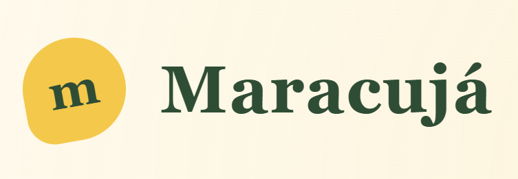

Projetos que fazem sentido
Crie livros, adicione uma capa e organize os capítulos em um só lugar.

MaracujáSeu espaço de escrita
O Maracujá é um ambiente de escrita local para transformar uma primeira frase em um projeto inteiro: livros, capítulos, notas e versões, tudo no mesmo lugar.
Sem nuvem. Sem assinatura. Seus arquivos ficam com você.
Do primeiro rascunho à versão que você decide chamar de oficial, o Maracujá acompanha cada etapa sem tirar você do texto.
Crie livros, adicione uma capa e organize os capítulos em um só lugar.
Experimente novos caminhos, compare versões lado a lado e canonize a que virou oficial.
Guarde personagens, worldbuilding, temas, arcos de história e tudo o que não cabe no capítulo.
Leve seu projeto para PDF, HTML ou Markdown. EPUB e DOCX estão no caminho.
Sem nuvem, assinatura ou custo adicional: o armazenamento é local por escolha.
O projeto é mantido em público e evolui com relatos, ideias e contribuições.
Um fluxo simples
A ferramenta fica quieta enquanto você trabalha e aparece quando é hora de organizar, comparar ou levar o texto para outro formato.
Ler o tutorialComece em poucos minutos
O Maracujá é um projeto Python de código aberto. Clone, instale as dependências e abra o app no navegador.
O projeto ainda está crescendo. Encontre um problema, conte o que você imaginou ou ajude a construir o próximo capítulo.